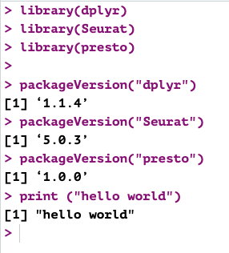
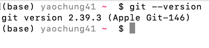
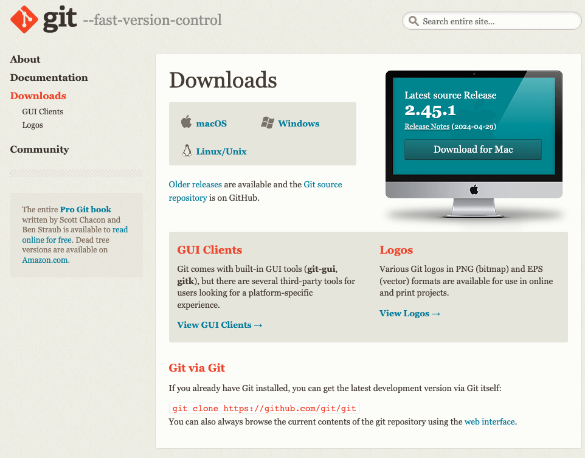

# Step1. Install packages from CRAN
install.packages(c("dplyr", "Seurat", "devtools"))
# Step2. Install presto
devtools::install_github("immunogenomics/presto")
# Step3. Check if you have BiocManager
if (!requireNamespace("BiocManager", quietly = TRUE))
install.packages("BiocManager")Install R and RStudio
If you want to explore by yourself, here are the manuals to install R and RStudio.
In brief:
Windows:
Download the current R version for windows here: R download link (R for windows) and follow the instructions.
Download RStudio here: RStudio download link (windows) and follow the instructions.
Macs and Linux:
Download the current R version for windows here: R for macs | R for Ubuntu(Linux) and follow the instructions.
Download RStudio here: RStudio for Macs ,RStudio for Ubuntu and follow the instructions.
after installing R and RStudio, you can test it by opening the RStudio software and type a simple code in the console like:
Next step is to install all pre-requested packages for the course.
Install pre-requested packages
Please type the below command in your console one by one:
Check everything is settle
Check you have R and all packages are available for the correct version. Try execute the code below in your console in RStudio.
[1] '1.1.4'[1] '5.0.3'[1] '1.0.0'[1] "hello world"You should get something like this without error:

Install Git and login to GitLab
For macOS and Linux user, you can check if you already have it one your laptop by typing git --version from your terminal.

If you do not have git, go to the official website and follow the instruction to download git for your operating system.

Note: window’s user might need to use a bash terminal (it will go with the Git dowload) to check your git version (For more info: here).
Next, please check if you can login to FU GitLab using your FU-Account. More detail description can be found here.